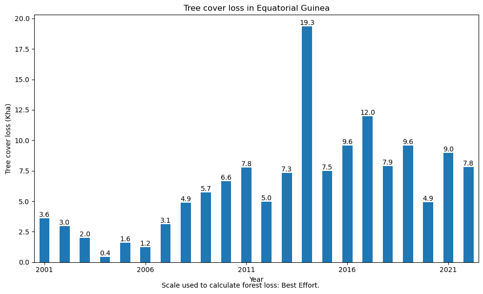

Code
import ee
import utils.ee_utils as tc
# Authenticate Earth Engine (only once per computer)
#ee.Authenticate()
# Initialize Earth Engine
ee.Initialize()import ee
import utils.ee_utils as tc
# Authenticate Earth Engine (only once per computer)
#ee.Authenticate()
# Initialize Earth Engine
ee.Initialize()This notebook demonstrates how you can calculate yearly tree cover loss using the Google Earth Engine API for Python on the Hansen Global Forest Change data.1 I have written a custom function that uses a connection to Earth Engine to calculate forest loss for a given country over a given time period, and outputs the results as a bar chart. The function tree_cover_loss() takes five arguments: country, yearFrom, yearTo, scale and maxPixels. The first three are self-explanatory, whereas the latter two requires some explanation. scale
tc.forest_loss('Equatorial Guinea', 2001, 2022, scale=30, maxPixels=1e9, bestEffort=True)
tc.forest_map('Equatorial Guinea', 2010)Hansen, M. C., P. V. Potapov, R. Moore, M. Hancher, S. A. Turubanova, A. Tyukavina, D. Thau, S. V. Stehman, S. J. Goetz, T. R. Loveland, A. Kommareddy, A. Egorov, L. Chini, C. O. Justice, and J. R. G. Townshend. 2013. “High-Resolution Global Maps of 21st-Century Forest Cover Change.” Science 342 (15 November): 850-53. 10.1126/science.1244693 Data available on-line at: https://glad.earthengine.app/view/global-forest-change.↩︎